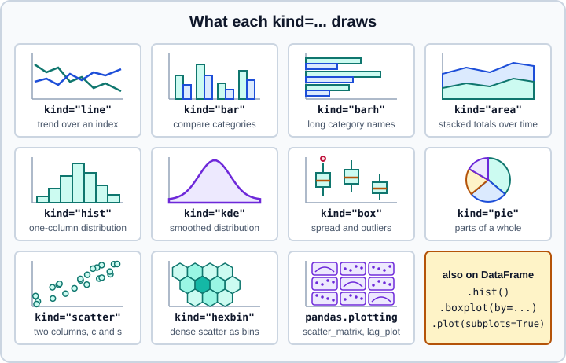

Charts with pandas
|
This content was generated with the assistance of AI and should be verified against the official documentation before being relied on in production. |
Every pandas Series and DataFrame has a .plot accessor that draws a chart with one call, using the labels of the
index and the columns for the axes and the legend. It is a thin layer over Matplotlib: the result of a plot call is a
Matplotlib Axes (or an array of them), so everything you know about Matplotlib still applies, and pandas adds the
parts that need to know about data frames, such as one line per column, grouping and time-series date ticks.
This page targets pandas 3.1 on Python 3.13 or 3.14 with Matplotlib 3.11 and was checked in October 2026; every example
was run with Python 3.13 and pandas 3.1.0 using the non-interactive Agg backend, and the printed output is the real
output. The charts themselves are not reproduced here: the page explains what each call draws and what to check. For
Matplotlib in depth, seaborn and Plotly, and for guidance on choosing a chart, see
Data Visualization. The Matplotlib Figure/Axes model that this page relies on
is introduced there; if you know R, the closest equivalent is described in
ggplot2 and the Grammar of Graphics.
Requirements
Plotting needs Matplotlib, which is an optional dependency of pandas. In pandas 3.1 the minimum is Matplotlib 3.10.5, and
the plot extra installs it:
pip install "pandas[plot]"Without Matplotlib, a plot call raises an ImportError that explains the situation. kde and density plots also need
SciPy, and the .style accessor, which is a different feature, needs Jinja2 (see
Table Styling).
import sys
sys.modules["matplotlib"] = None # simulate a missing package
import pandas as pd
try:
pd.Series([1, 2]).plot()
except ImportError as exc:
print(type(exc).__name__, exc)ImportError matplotlib is required for plotting when the default backend "matplotlib" is selected.
In scripts, tests and servers without a display, select a non-interactive backend before importing pyplot, as the examples
below do with matplotlib.use("Agg"). In a notebook the inline backend is already active. Close figures you no longer need
with plt.close(fig) or plt.close("all"): pandas does not do it for you, and a loop that creates charts leaks memory
until Matplotlib warns about too many open figures.
The plot accessor and its kinds
df.plot(kind="...") and the equivalent df.plot.<kind>() accept the same options. pandas 3.1 knows eleven kinds; asking
for anything else raises a ValueError that lists them (there is no violin or heat-map kind: use Matplotlib or seaborn for
those).

import pandas as pd
print(pd.options.plotting.backend)
print(pd.plotting._core.PlotAccessor._all_kinds)
try:
pd.DataFrame({"x": [1]}).plot(kind="violin")
except ValueError as exc:
print("ValueError:", exc)matplotlib
('line', 'bar', 'barh', 'kde', 'density', 'area', 'hist', 'box', 'pie', 'scatter', 'hexbin')
ValueError: violin is not a valid plot kind Valid plot kinds: ('line', 'bar', 'barh', 'kde', 'density', 'area', 'hist', 'box', 'pie', 'scatter', 'hexbin')
_all_kinds is a private attribute, shown here only to list the kinds; the error message is the supported way to see them.
density is an alias of kde. DataFrame.plot draws one series per column; x= and y= choose columns, and when x is
omitted the index is the horizontal axis.
The most used options are shared by all kinds:
| Option | Meaning |
|---|---|
|
Columns for the axes. |
|
One of the eleven kinds above; the default is |
|
An existing Matplotlib |
|
Draw one subplot per column in a grid ( |
|
Figure size in inches, |
|
Text and decoration. |
|
Matplotlib format strings such as |
|
Explicit colours, or a Matplotlib colormap name for per-column or per-point colours. |
|
Axis scales, ranges, tick positions, tick label rotation and size. |
|
Stack bars or areas (default for |
|
Plot some columns on a right-hand axis and mark them |
|
Error bars from a column, a Series, an array or a DataFrame of the same shape. |
|
Draw the data as a table below the chart. |
|
Plotting backend for this call (see the section on backends). |
Source: pandas.DataFrame.plot and pandas API reference: Plotting.
Line charts and time series
The default chart plots every column against the index. With a DatetimeIndex, pandas chooses date tick labels that adapt
to the span of the data and handles missing values by leaving a gap in the line.
import matplotlib
matplotlib.use("Agg") # headless backend for scripts and CI
import matplotlib.pyplot as plt
import numpy as np
import pandas as pd
rng = np.random.default_rng(42)
idx = pd.date_range("2026-01-01", periods=120, freq="D")
df = pd.DataFrame(
rng.normal(size=(120, 3)).cumsum(axis=0),
index=idx,
columns=["alpha", "beta", "gamma"],
)
ax = df.plot(title="Three random walks", ylabel="value", figsize=(8, 4), grid=True)
print(type(ax).__name__, ax.get_title(), [t.get_text() for t in ax.get_legend().get_texts()])
fig = ax.get_figure()
fig.savefig("walks.png", dpi=150, bbox_inches="tight")
plt.close(fig)Axes Three random walks ['alpha', 'beta', 'gamma']
ax.get_figure() returns the Figure, and savefig writes PNG, SVG or PDF according to the extension. The dpi
argument matters only for raster formats; bbox_inches="tight" trims empty margins.
A few behaviours specific to time-series charts:
-
pandas formats the axis with its own date locators, which is why
ax.xaxis.set_major_formatter(...)sometimes seems to be ignored. Passx_compat=Trueto use Matplotlib’s date tools instead, or set it temporarily withwith pd.plotting.plot_params.use("x_compat", True):. -
A gap of
NaNleaves a gap in the line. Fill or interpolate if you want it continuous, and be explicit about it. -
Use
logy=Truefor data that spans orders of magnitude; zeros and negative values cannot be shown on a log axis. -
Resample before plotting if the data is denser than the pixels on the screen; see Resampling and Frequencies.
ts = pd.Series(rng.lognormal(size=60).cumsum(), index=pd.date_range("2026-01-01", periods=60))
ts.iloc[20:25] = np.nan
ax = ts.plot(logy=True, x_compat=True)
ax.xaxis.set_major_formatter(matplotlib.dates.DateFormatter("%d %b"))
print(ts.isna().sum())
plt.close("all")
with pd.plotting.plot_params.use("x_compat", True):
print(pd.plotting.plot_params["x_compat"])
print(pd.plotting.plot_params["x_compat"])5 True False
Subplots, layout and a second axis
subplots=True draws one Axes per column and returns a NumPy array of them. The layout argument arranges them in a
grid, and sharex=True links the horizontal axes.
axes = df.plot(subplots=True, layout=(3, 1), figsize=(8, 6), sharex=True)
print(axes.shape)
plt.close("all")(3, 1)
When two columns have very different scales, put one on a second axis with secondary_y. The legend labels the right-hand
column (right). To combine columns from separate calls, pass the Axes returned by the first call as ax= to the second:
ax = df["alpha"].plot(label="alpha (left)", legend=True)
df["gamma"].plot(secondary_y=True, label="gamma (right)", legend=True, ax=ax)
print(len(ax.figure.axes))
d = pd.DataFrame({"t": [1, 2, 3], "temp": [10, 12, 11], "rain": [0, 5, 1]})
ax = d.plot(x="t", y=["temp", "rain"], secondary_y="rain")
print([l.get_text() for l in ax.get_legend().get_texts()])
plt.close("all")2 ['temp', 'rain (right)']
Two axes mean two y-scales that the reader must match by eye; use this sparingly and label both axes. A better alternative is often two stacked subplots with a shared x axis.
To place several pandas charts into one figure, create the figure and axes with Matplotlib and hand each Axes to ax=. This gives full control of the layout and is the pattern to use when a chart is part of a larger figure.
fig, axes = plt.subplots(1, 2, figsize=(10, 3.5))
df["alpha"].plot(ax=axes[0], title="line")
df["alpha"].plot.hist(bins=20, ax=axes[1], title="hist")
fig.tight_layout()
plt.close(fig)Bar charts, stacked bars and areas
Bar charts treat the index as categories. bar draws vertical bars, barh horizontal bars (better for long labels), and
stacked=True stacks the columns. area is stacked by default and requires that each column has a single sign: mixing
positive and negative values raises an error.
rng = np.random.default_rng(7)
sales = pd.DataFrame(
{"north": [12, 15, 9, 14], "south": [8, 11, 13, 10], "east": [5, 7, 6, 9]},
index=["Q1", "Q2", "Q3", "Q4"],
)
fig, axes = plt.subplots(2, 3, figsize=(12, 7))
sales.plot.bar(ax=axes[0, 0], title="bar")
sales.plot.bar(stacked=True, ax=axes[0, 1], title="stacked bar")
sales.plot.barh(ax=axes[0, 2], title="barh")
sales.plot.area(ax=axes[1, 0], title="area") # stacked by default, needs same sign
sales["north"].plot.pie(ax=axes[1, 1], title="pie", autopct="%.0f%%")
sales.plot.box(ax=axes[1, 2], title="box")
fig.tight_layout()
fig.savefig("kinds.png")
print([ax.get_title() for ax in axes.ravel()])
plt.close(fig)
try:
pd.DataFrame({"x": [1, 2, 3], "y": [-1, 2, 3]}).plot.area()
except ValueError as exc:
print(exc)
plt.close("all")Source: What’s new in pandas 3.1.0.
['bar', 'stacked bar', 'barh', 'area', 'pie', 'box'] When stacked is True, each column must be either all positive or all negative. Column 'y' contains both positive and negative values
Rules of thumb that go with these charts: a bar chart must start at zero, because the length of the bar encodes the value;
sort the categories by value unless they have a natural order; and use rot=0 for short labels and barh for long ones.
Bars on a date index: a pandas 3.1 change
Before pandas 3.1, a vertical bar plot drew one label per bar, in the format of the index, rotated by default. In pandas 3.1
a bar plot on a regular-frequency DatetimeIndex or PeriodIndex uses the same dynamic date tick labels as a line plot,
and the labels are no longer rotated by default (pass rot to override). The result is fewer, abbreviated labels. If you
want one label per bar, convert the index to text.
monthly = pd.Series(range(6), index=pd.date_range("2026-01-31", periods=6, freq="ME"))
ax = monthly.plot.bar()
ax.get_figure().canvas.draw()
print([t.get_text() for t in ax.get_xticklabels()], [t.get_rotation() for t in ax.get_xticklabels()][:2])
plt.close("all")
ax = monthly.rename(lambda d: d.strftime("%b")).plot.bar(rot=0)
ax.get_figure().canvas.draw()
print([t.get_text() for t in ax.get_xticklabels()])
plt.close("all")['Jan\n2026'] [0.0] ['Jan', 'Feb', 'Mar', 'Apr', 'May', 'Jun']
Source: What’s new in pandas 3.1.0.
Distributions: histogram, KDE and box plots
hist bins the values, kde draws a smoothed density (it needs SciPy), and box summarises each column by its median,
quartiles and whiskers, showing the points beyond 1.5 times the interquartile range as individual markers. On a DataFrame
all three draw one element per column. bins, alpha (transparency, useful for overlapping histograms) and density
control the histogram.
samples = pd.DataFrame({"a": rng.normal(0, 1, 500), "b": rng.normal(1, 2, 500)})
fig, axes = plt.subplots(1, 3, figsize=(12, 3.5))
samples.plot.hist(bins=30, alpha=0.6, ax=axes[0], title="hist")
samples.plot.kde(ax=axes[1], title="kde") # needs SciPy
samples.plot.scatter(x="a", y="b", c="b", colormap="viridis", ax=axes[2], title="scatter")
fig.tight_layout()
fig.savefig("dist.png")
print(samples.plot.hexbin(x="a", y="b", gridsize=15).collections[0].get_array().size > 0)
plt.close("all")Source: pandas.DataFrame.hist
True
The shape of a histogram depends on the number of bins, and a KDE on its bandwidth; try several before concluding
that a distribution has two peaks. For ready-made grouped versions, DataFrame.hist(column, by=) and
DataFrame.boxplot(column, by=) draw one chart per group (see below). Without SciPy installed, kde raises
ModuleNotFoundError.
pandas 3.0 added the weights parameter to DataFrame.plot.kde() and Series.plot.kde() (weighted density estimates).
Scatter and hexbin charts
scatter needs x and y. The c argument colours the points by a column of numbers (with colormap and a colorbar) or
by a column of strings; the latter is new in pandas 3.0. s sets the marker size and can also be a column, which gives a
bubble chart. hexbin counts points in hexagonal cells and replaces a scatter plot that has too many points to read.
df2 = pd.DataFrame({"x": rng.normal(size=40), "y": rng.normal(size=40), "grp": rng.choice(["a", "b", "c"], 40)})
colors = {"a": "tab:blue", "b": "tab:orange", "c": "tab:green"}
ax = df2.plot.scatter(x="x", y="y", c="grp") # pandas 3.0: strings accepted
ax = df2.plot.scatter(x="x", y="y", c=df2["grp"].map(colors)) # explicit colour per point
w = pd.Series(rng.uniform(0.5, 2, 40))
ax = df2["x"].plot.kde(weights=w) # pandas 3.0: weights
plt.close("all")When the string column holds category names, pandas maps each distinct value to a colour of the default cycle, and there is
no legend that explains the mapping; build one with Matplotlib if the chart is for others. In an exploratory scatter plot of
a million points, use hexbin, a smaller marker (s=1) with alpha, or aggregate first.
Pie charts
pie draws a Series, or one column of a DataFrame (or all of them with subplots=True). Use it only for a few slices of a
whole that sums to 100 percent, labelled directly; for anything else a sorted bar chart is easier to read. pandas 3.0 made
the ylabel argument work for pie charts.
ax = pd.Series([3, 2, 1], index=list("abc")).plot.pie(ylabel="share", autopct="%.0f%%")
print(repr(ax.get_ylabel()))
plt.close("all")Source: pandas.Series.plot.pie
'share'
Helpers in pandas.plotting
The pandas.plotting module has functions that draw a whole analysis chart from a DataFrame or Series. They are
imported with from pandas import plotting, or called as pd.plotting.<name>. The old location pandas.tools.plotting
(and pd.scatter_matrix) disappeared long ago.
| Function | What it draws |
|---|---|
|
A grid of pairwise scatter plots, with a histogram or KDE on the diagonal; |
|
One line per row across the numeric columns, coloured by class; shows how groups differ over many variables. |
|
A radial projection of several variables onto a circle, coloured by class. |
|
Each row as a Fourier-type curve, coloured by class; similar rows give similar curves. |
|
The autocorrelation of a time series at all lags, with confidence bands; use it to detect seasonality. |
|
A scatter of each value against the one |
|
The bootstrap distribution of the mean, median and mid-range of a sample. |
|
Draws a DataFrame as a Matplotlib table on an |
|
The functions behind |
|
Register or remove the pandas converters for |
from pandas import plotting
rng = np.random.default_rng(1)
iris_like = pd.DataFrame(
{
"sepal": rng.normal(5.8, 0.8, 90),
"petal": rng.normal(3.7, 1.7, 90),
"width": rng.normal(1.2, 0.7, 90),
"species": np.repeat(["a", "b", "c"], 30),
}
)
iris_like["petal"] += iris_like["species"].map({"a": -2, "b": 0, "c": 2})
axes = plotting.scatter_matrix(iris_like[["sepal", "petal", "width"]], figsize=(6, 6), diagonal="kde")
print(axes.shape)
plt.close("all")
ax = plotting.parallel_coordinates(iris_like, "species")
plt.close("all")
ax = plotting.radviz(iris_like, "species"); plt.close("all")
ax = plotting.andrews_curves(iris_like, "species"); plt.close("all")
series = pd.Series(np.sin(np.linspace(0, 20, 200)) + rng.normal(0, 0.2, 200))
ax = plotting.autocorrelation_plot(series); plt.close("all")
ax = plotting.lag_plot(series, lag=1); plt.close("all")
fig = plotting.bootstrap_plot(series, size=30, samples=100)
print(type(fig).__name__)
plt.close("all")(3, 3) Figure
Charts by group
DataFrame.hist and DataFrame.boxplot take by= to draw one chart per group, and groupby(...)[col].plot draws one
element per group on the same axes.
iris_like.groupby("species")["petal"].plot.kde(legend=True)
plt.close("all")
axes = iris_like.hist(column="petal", by="species", bins=10, figsize=(8, 3), layout=(1, 3))
print(axes.shape)
plt.close("all")
ax = iris_like.boxplot(column="petal", by="species")
plt.close("all")Source: pandas.DataFrame.hist
(3,)
Error bars and a table under the chart complete the toolkit for reports: yerr accepts a DataFrame of the same shape as
the plotted data, and table=True draws the values below the axes.
means = iris_like.groupby("species")[["sepal", "petal"]].mean()
stds = iris_like.groupby("species")[["sepal", "petal"]].std()
ax = means.plot.bar(yerr=stds, capsize=4, rot=0)
plt.close("all")
fig, ax = plt.subplots()
means.plot.bar(ax=ax, table=True, rot=0) # draws the data as a table under the chart
plt.close("all")Aggregate with groupby (see Group By) before plotting: a chart of the aggregated
table is easier to control than a chart of the raw rows.
Plotting backends
The backend decides which library draws the chart. The default is Matplotlib; any package that registers a
pandas_plotting_backends entry point (for example Plotly’s) can be selected globally with the plotting.backend
option, or for one call with backend=. An unknown backend raises a ValueError that names the missing package.
df3 = pd.DataFrame({"x": [1, 2, 3], "y": [2, 4, 8]})
print(pd.get_option("plotting.backend"))
ax = df3.plot(x="x", y="y", backend="matplotlib") # per call
with pd.option_context("plotting.backend", "matplotlib"): # scoped
df3.plot()
try:
df3.plot(backend="not_installed_backend")
except ValueError as exc:
print(type(exc).__name__, str(exc)[:110])
print(pd.get_option("plotting.matplotlib.register_converters"))
plt.close("all")matplotlib ValueError Could not find plotting backend 'not_installed_backend'. Ensure that you've installed the package providing th auto
Different backends return different objects (a Plotly Figure instead of an Axes), and options such as subplots,
secondary_y and style are interpreted by the backend, so code that post-processes the result is backend-specific.
The option plotting.matplotlib.register_converters controls whether pandas registers its date converters with Matplotlib
("auto" registers them when pandas plots). See Options and Settings.
Source: pandas user guide: Plotting backends.
Interactive and statistical alternatives
pandas plotting is the quickest way to look at data, not the most capable one. When a chart goes into a report, prefer Matplotlib directly for fine control, seaborn for statistical charts (distributions with confidence bands, regression fits, categorical comparisons) and Plotly for interactive charts; all three accept DataFrames. The comparison and the Matplotlib architecture are in Data Visualization.
Older code and tutorials
| Older statement | Status in pandas 3.1 | What to do |
|---|---|---|
|
Module removed |
|
|
Not in the top-level namespace |
|
|
|
Use Matplotlib styles: |
|
|
|
Plot calls create a figure and show it |
The call returns an |
Use |
Bar plots show every date label, rotated |
A regular |
Convert to text labels, or pass |
|
Fixed in pandas 3.0 |
Use the parameters directly |
Matplotlib is installed with pandas |
It is optional; |
Declare it in your requirements |
Pitfalls checklist
-
Matplotlib is optional; install
pandas[plot]and SciPy (for KDE) when you need them. -
Plot calls return
Axesobjects; keep them to customise the chart, and close figures in loops. -
Bar charts need a zero baseline,
areaneeds one sign per column, and log axes cannot show zeros. -
Use a date index for time-series charts, resample if the data is too dense, and do not rely on bar labels from a date index in 3.1 (convert to text).
-
Two y-axes are easy to misread; prefer subplots with a shared x-axis.
-
In headless environments select a non-interactive backend such as
Aggbefore importingpyplot. -
Save figures with
savefigand a suitabledpi; do not rely on screenshots.